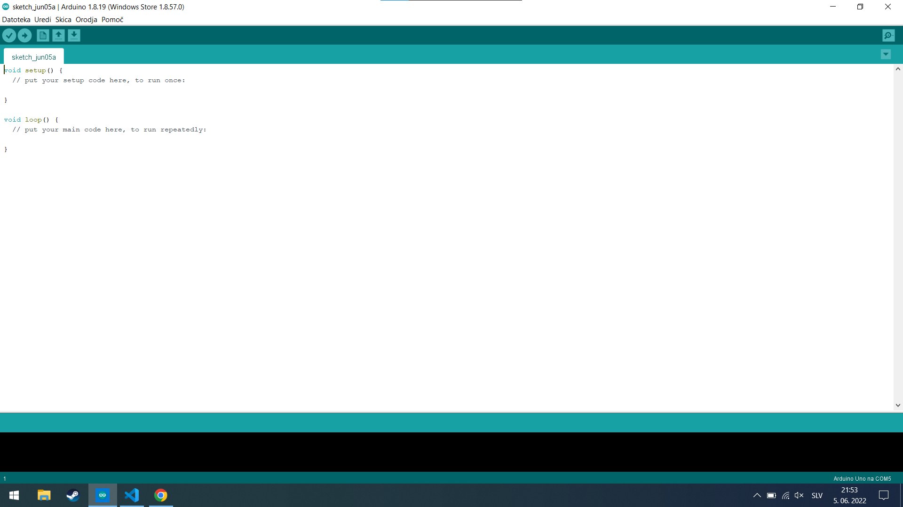
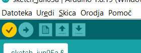

NAUČI SE ARDUINO

Izvej vse o Arduino ploščah in njihovi zgradbi!
ARDUINO DOKUMENTACIJA
S to kodo se boš spoznal, kako se piše kodo za Arduino ploščo. Seveda je to vse na osnovnem nivoju.
Najprej si moraš naložiti Arduino IDE. Naložiš si ga lahko preko microsoft trgovine ali pa da klikneš na spodnjo povezavo.
Naloži si arduino IDENapisali bomo program, kjer bo utripala LED lučka, ki je vgrajena v Arduino ploščo.
Začnemo tako, da odpremo arduino IDE. Ko odpremo arduino IDE vidimo tole:
Kot vidiš imaš nekaj napisano. void setup in void loop. void setup je del kode, ki se izvede samo enkrat, void loop pa se izvaja v neskončno. Za našo kodo potrebujemo programu povedati naj prižge LED lučko, zato bomo prižigali in ugašali pine.
funkcije ki jih bomo potrebovali za našo kodo so:
Preden začnemo pisati našo kodo, moramo vedeti, kaj te funkcije počnejo.
Najprej nastavimo spremenljivko izven void setup in void loopa, ker če bi ga dali v void setup, bi bila spremenljivka samo za ta loop, zato jo damo izven loopa, da postane 'globalna' spremenljivka. Vgrajena LED lučka, ki je na Arduinu unu je na pinu 13, za ostale verzije je lahko na drugih pinih, zato si poglej na katerem pinu je LED lučka. v void setupu imamo pinmode, ki naredi pin 13 izhod torej, da 'oddaja' elektriko in ne sprejema. LED v pinmodu je enako kot če bi napisali samo 13, ampak je zaradi lepše berljivosti shranjena kot LED. Nato sledi void loop. V void loopu se dogaja da se LED lučka prižge, in čez dve sekundi ugasne in tako naprej. Kaj se dogaja je, da Arduino prižge LED lučko zaradi digitalWrite(LED, HIGH), zato LED lučka sveti potem gre program na delay(1000), ki mu pove naj 'zaspi' sa 1 sekundo ali 1000 milisekund. Potem zaradi digitalWrite(LED, LOW) se LED lučka ugasne, in program počaka 1 sekundo in začne od začetka.
Najprej moraš izbrati katerega Arduinota imaš, to izbereš 'Orodja > Plošča > Arduino ki ga imaš', in izbereš vrata v 'Orodja > vrata > Izbereš označen vhod', zato da Arduino IDE ve, kam oz. na katerega Arduinota mora naložiti ta program.
Nato naložiš program na Arduino, s klikom na gumb s puščico v desno oz. drugi gumb.
Ko je program naložen, bi morala LED luč na Arduinu utripati.
Če hočeš še bolje znati Arduino, si poglej Arduino project hub, kjer lahko vidiš veliko dobrih projektov in kako jih narediti, ali se pa naučiš Arduino programiranje, in narediš svoje odlične projekte.
Za konec, si poglej kako se uporablja LED lučko z Arduino, in poveži dve LED lučki na Arduina, in napiši kodo ter ekperimentiraj.